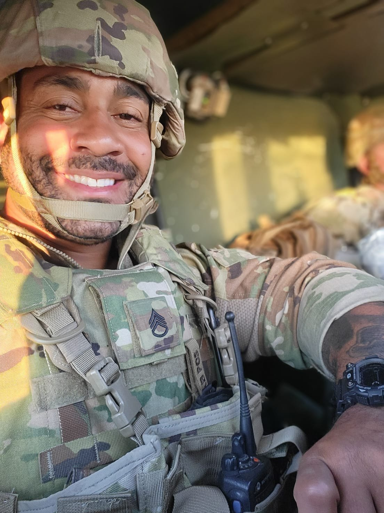
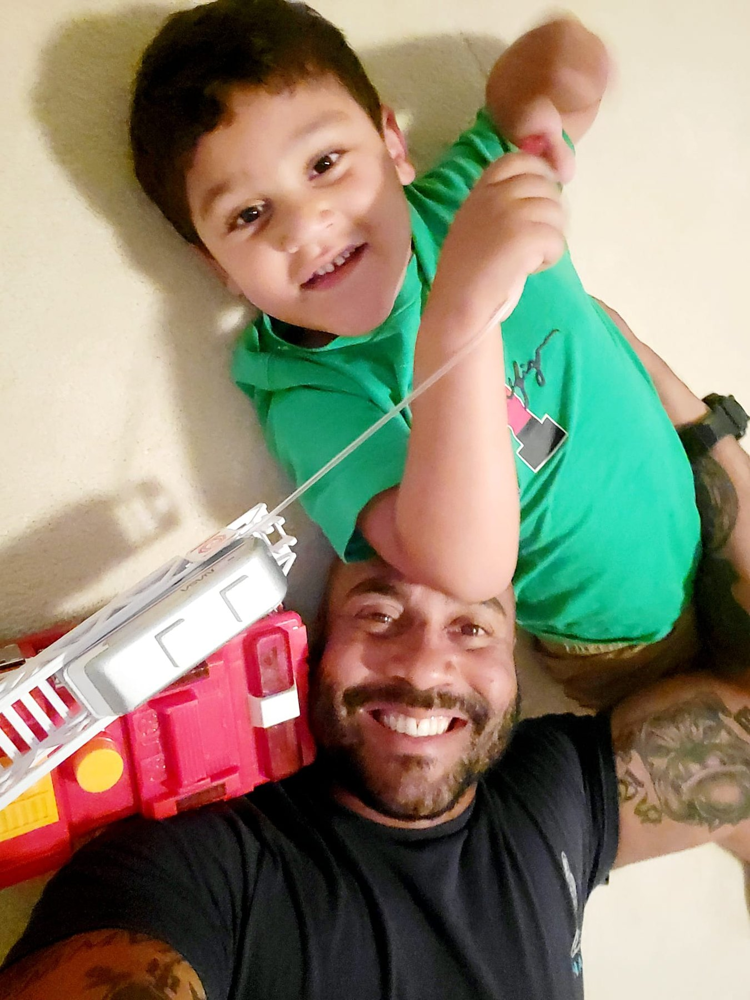
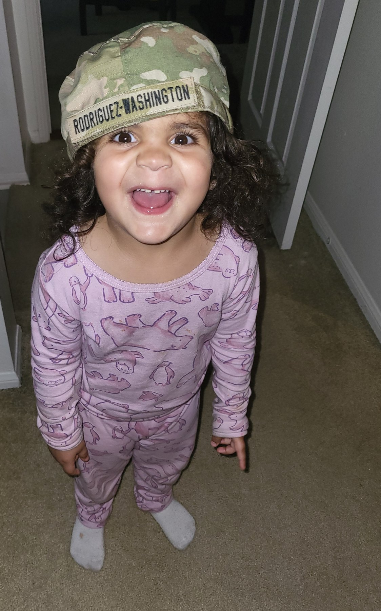

Discipline over noise
Clear priorities, steady habits, and fewer distractions.
2SHIPXRODWAVE • Southern California
Retired Marine. Psychology student. Builder of disciplined systems, steady habits, and the next chapter.
About
I am a retired U.S. Marine, a father of three, and a university student studying psychology and human development.
This site is a home base for my school work, personal growth, creative projects, and the systems I am building to bring more order to life.
Operating principles
Clear priorities, steady habits, and fewer distractions.
The work matters because real life demands strength, order, and follow-through.
Take what I study, test it in real life, and keep improving.
University
Building language skills, cultural understanding, and stronger communication.
Studying mental health, clinical practice, behavior, diagnosis, and support systems.
Connecting brain, body, nervous system, emotion, behavior, and real human experience.
Understanding growth across childhood, adulthood, parenting, family, and aging.
Mission
Visual identity
Real moments. Service, fatherhood, and the people who make the work matter.

Discipline earned the hard way. Calm under weight.

The real reason to build stronger systems and keep moving.

Love, protection, and presence — the mission after the mission.
Next builds
Contact
If you want to reach me, collaborate, or follow the work I am building, email is the best starting point.
Email Brandon